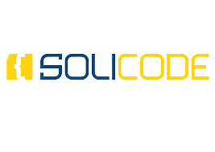

Partage de documents et de ressources dans Soli LMS
Projet File Rouge
Réalisée par : Samir Aoulad Amar
Encadrée par : Mr. ESSARRAJ Fouad
Tableau de matière
- Introduction...............................................................................................................................................................................................
- Contexte du
projet...............................................................................................................................................................................................
- Méthodes de
travail...............................................................................................................................................................................................
- UX
Design...............................................................................................................................................................................................
- Méthode
2TUP...............................................................................................................................................................................................
- Scrum...............................................................................................................................................................................................
- Planification...............................................................................................................................................................................................
- Branche
technique...............................................................................................................................................................................................
- Branche
fonctionnelle...............................................................................................................................................................................................
- Réalisation...............................................................................................................................................................................................
- Les outils et les
technologies...............................................................................................................................................................................................
- Conclusion...............................................................................................................................................................................................
Introduction
Le projet "Partage de documents et de ressources" vise à centraliser et organiser les ressources
pédagogiques au sein du Soli LMS. L'objectif de cet outil est de simplifier le partage des documents
éducatifs, tout en garantissant un accès facile pour tous les utilisateurs, y compris les formateurs et
les apprenants, dans un environnement sécurisé et structuré.
Avec ce système, la gestion des ressources devient plus organisée, facilitant la recherche, l'accès et
le partage des matériaux. Ce projet répond aux défis liés à la gestion inefficace du partage de
ressources dans les environnements éducatifs, améliorant ainsi la collaboration et l'efficacité de
l'apprentissage.

Contexte du projet
Le partage de documents et de ressources est essentiel dans les environnements éducatifs. Le système de
partage de documents de Soli LMS vise à améliorer ce processus en offrant une plateforme centralisée,
efficace et conviviale.
Relation avec le LMS :
Suivi des étudiants : En intégrant le partage des ressources dans le LMS, l'expérience des étudiants est
améliorée, car les matériaux d'apprentissage sont facilement accessibles.
Ressources centralisées : Le système garantit que toutes les ressources sont stockées et classées au
même endroit.
Communication efficace : Les étudiants et les enseignants peuvent communiquer les mises à jour liées aux
ressources directement sur la plateforme.
3. Méthode de travail
Méthodes de travail
UX Design
Le design UX est essentiel pour garantir que le système soit intuitif pour ses utilisateurs. Nous avons
travaillé à comprendre les besoins des enseignants et des étudiants, en créant des maquettes intuitives
et en effectuant des tests d’utilisabilité pour nous assurer que la plateforme soit facile à naviguer.
Méthode 2TUP
La méthode 2TUP sépare le projet en deux processus parallèles : le cycle rapide pour les besoins
immédiats (interface utilisateur) et le cycle approfondi pour la mise en œuvre technique (structure de
base de données, sécurité, etc.). Cela permet d'évoluer rapidement tout en assurant une base technique
solide.
Scrum
Nous avons adopté la méthode Scrum pour la gestion du projet. Cette approche divise le travail en sprints
courts, permettant une gestion flexible et collaborative. Scrum favorise les retours fréquents,
garantissant une amélioration continue du produit.

Planification
Diagramme de Gantt
Le diagramme de Gantt permet de visualiser les différentes étapes du projet, leur durée et les relations
chronologiques entre elles. Il est utile pour suivre les progrès, allouer les ressources et garantir le
respect des délais pour chaque phase du projet.
Branche technique
Capture des besoins techniques
Comprendre les exigences techniques du système, telles que la structure de la base de données, le
contrôle d'accès et les protocoles de sécurité.
Conception générique
La conception de l'architecture technique, y compris la structure backend, les modèles de base de données
et l'intégration avec le LMS.
Analyse technique
Une analyse approfondie de l'architecture du système, des outils et des technologies nécessaires pour
soutenir un partage de documents et de ressources efficace.
Branche fonctionnelle
Carte d’empathie
Définir le problème
Actuellement, l'absence d'un système centralisé et efficace pour partager les ressources entraîne de la
confusion et des retards dans l'accès aux documents nécessaires. Ce projet vise à résoudre ce problème
en créant un système de partage de documents convivial et organisé au sein du LMS.
Cases
Cas d'utilisation
Le deuxième sprint se concentrera sur l'amélioration de la sécurité et des permissions, garantissant que
seules les personnes autorisées puissent accéder ou modifier certaines ressources.
Le premier cas d'utilisation se concentre sur la fourniture d'une interface intuitive permettant aux
utilisateurs de télécharger, classer et partager des ressources efficacement.
Conception
Diagramme de classe
Le diagramme de classes illustre les principales entités du système "Partage de documents et de ressources", leurs attributs, méthodes et relations. Il représente la structure du système et les interactions entre les différentes classes. Les classes principales du projet incluent :
Exemple de diagramme de classes :
Le diagramme montre comment une entité "Document" est liée à une entité "Utilisateur" (par la relation "Partage"), indiquant que les ressources peuvent être partagées et gérées par les utilisateurs autorisés.
Modèle
Le modèle décrit la logique fondamentale pour la gestion des documents et des ressources, y compris le stockage des fichiers, la catégorisation et les permissions.
Conclusion
Le projet "Partage de documents et de ressources" est essentiel pour créer une plateforme centralisée et conviviale pour le partage de ressources au sein de Soli LMS. Il résout le problème d'accessibilité et de gestion des ressources, garantissant que tous les utilisateurs—formateurs, apprenants et administrateurs—puissent partager et accéder facilement aux documents nécessaires. Grâce à une planification réfléchie, une analyse technique et un design centré sur l'utilisateur, le projet vise à fournir une expérience fluide pour tous les utilisateurs.